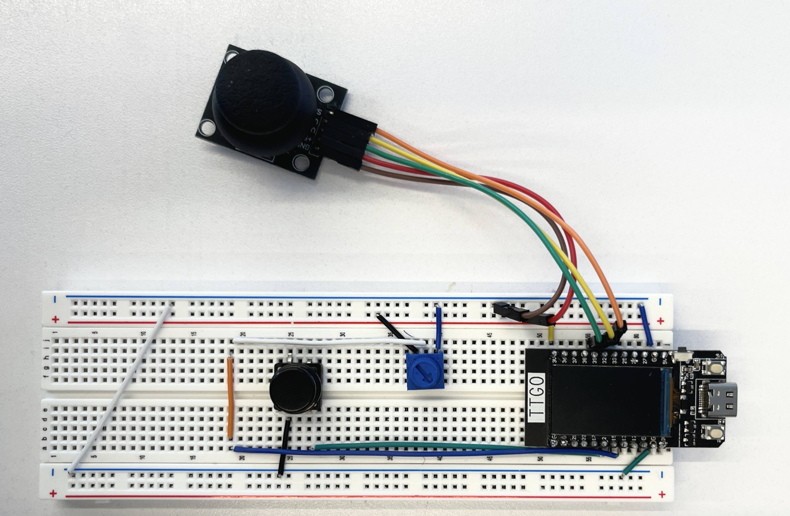

Interactive Devices
For Module 2, the goal was to create an interactive device using the ESP32 TTGO T-display, a joystick, a button and a potentiometer. With the data obtained through the sensors and sent in serial communication to a laptop, it was proposed to create a program that generates media to handle this data and create something interesting with it.
My initial dilemma was how to explore my prior knowledge on electrical circuits while not being actually hindered by them (by getting caught up in lower levels of abstraction, for example). Additionally, I wanted to create something that I actually found interesting and helpful, which hopefully would also speak to others. I decided upon making a task/habit tracker.
The motivation behind comes from my personal experience in keeping analog habit/task trackers in my planner with varying success. Although somewhat consistent, if I don’t have my journal close to me, I end up forgetting to update it. Inspired by the design of a counter clicker, I hope that the (supposed) convenience makes it easier to update the tasks quickly. Additionally, I enjoy the sensorial experience created by the buttons, joystick and potentiometer dial. The user may interact with the button to toggle between task status (completed/uncompleted), the joystick to switch between design themes, and the potentiometer to scroll between the different tasks being tracked. From the positive feedback received from peers during the showcase, many also enjoyed the physical tactile experience provided by the device and felt like this addition, compared to only having the digital interaction, could be a satisfying encouragement to complete their tasks.
Circuit Construction
The first step was to construct the electrical circuit on the breadboard. Referencing which were the analog pins on the ESP32, I chose to connect sensors to the microcontroller’s pins as follow:
- Pushbutton: Connected to pin 15
- Potentiometer: Connected to pin 13
- Joystick (VRX): Connected to pin 39
- Joystick (VRY): Connected to pin 32
- Joystick (SW): Connected to pin 33 (initially wired during design, though not used)
- Joystick (GND & +5V): GND to GND, +5V to +3V power rail (to normalize potentiometer readings)

Breadboard circuit for task tracker
Code Implementation & Challenges
Then, I started from the codes from Lab 2. Changes in the L/R program were made to transfer the interactiveness from the ESP32’s buttons to the external pushbutton and to also toggle between the states (message) displayed through Processing from the Arduino code instead of depending on two buttons as originally described. It was necessary to update the code to serial print only when the state was toggled (when button was pressed) to prevent overwhelming the system with serial prints.
The first iteration had the Arduino code serial print the String that should be displayed whenever the button was pressed:
void loop() {
if (ButtonPressed) {
ButtonPressed = false;
ButtonCompleted = !ButtonCompleted;
}
if (ButtonCompleted != lastButtonState) {
if (ButtonCompleted) {
Serial.println("[X]");
}
else {
Serial.println("[ ]");
}
lastButtonState = ButtonCompleted;
}
}However, when adding the potentiometer functionality to change the active task, I faced the challenge of integrating the two sensors’ information into the serial communication to Processing. My plan was to have the potentiometer value determine the active task by attributing a part of the range for each task, inspired by the class usage in HTML/css. Originally, the implementation was fully done in the Arduino code, but that was not working as desired. The String (“[X]” or “[ ]”) would only appear at the moment the button was pressed and the potentiometer (with detected values displayed on the screen for debugging purposes) would take over the program, since the data was being mixed in the serial communication. his was the most challenging part to implement and was key for the tracker to be able to have more than one task and update them correctly.
Final Installation Display Video
In order to properly implement the active task selection, switched from having the range detection and task status update all in the Arduino side to splitting it to have the latter be done in Processing. The pot’s value determined the variable currentTask in the Arduino code (the NUM_TASKS is a global variable used to help updating the number of tasks tracked):
int potValue = analogRead(POT_PIN);
int currentTask = (potValue * NUM_TASKS) / 4096;
if (currentTask >= NUM_TASKS) {
currentTask = NUM_TASKS - 1;
}This variable was then serial printed to Processing in the packet along with whether the button was pressed or not (buttonEvent), the activeTheme and joyYAction (latter two still to be described):
Serial.print(currentTask);
Serial.print(",");
Serial.print(buttonEvent);
Serial.print(",");
Serial.print(activeTheme);
Serial.print(",");
Serial.println(joyYAction);
delay(50);On the Processing code, the integer stored by activeTask selects which task is editable and formats to another colour (to highlight its active state). Notice that 'X' and ' ' are now determined in the Processing side, being toggled if buttonEvent = 1:
// Choose editable task
if (activeTask >= 0 && activeTask < NUM_TASKS) {
// Toggle individual task with push button
if (buttonEvent == 1) {
if (taskStates[activeTask] == 'X') {
taskStates[activeTask] = ' ';
} else {
taskStates[activeTask] = 'X';
}
}
}
// Formatting the tasks based on status
if (i == activeTask) {
fill(63, 130, 198);
stroke(122, 162, 247);
strokeWeight(2);
} else {
fill(8, 67, 127);
stroke(45, 48, 68);
strokeWeight(1);
}Joystick Interactions: Themes & Reset Safety
For the joystick usage, I was between implementing different tasks categories to be tracked (i.e. School, Personal, Work, etc.) or having different themes for the tracker by using the x-axis. For the y-axis, my goal was for it to allow the user to reset the tasks’ states to incomplete.
Option 1 for joystick x-axis.
I found the first option not compatible with the joystick double functionality and columns were vulnerable to being reseted when switching between categories. Perhaps a more restrictive sensor program (to account for liminal movements) or more rigid/fixed joystick could have minimised these issues, but I preferred to continue with the second option.
The motivation behind allowing for different theme selection was my self-awareness that my personal aesthetic preferences are not always mainstream (e.g. I find IAB’s architecture comforting). Although I prefer a minimal design for a task tracker (almost a “function over form”), I know that it can be seen as boring or as uncreative. So I wanted to offer the option for a more elaborate UI.
An x-axis movement in the joystick (detected by pin 39 < 1400 or > 2600) updates the activeTheme variable, which is sent through serial communication to Processing to be interpreted as themeIndex, like done for the activeTask variable:
if (joyX < 1400 && !joyMovedX && (currentTime - lastThemeChangeTime > themeCooldown)) {
activeTheme--;
if (activeTheme < 0) activeTheme = NUM_THEMES - 1;
joyMovedX = true;
lastThemeChangeTime = currentTime;
}
else if (joyX > 2600 && !joyMovedX && (currentTime - lastThemeChangeTime > themeCooldown)) {
activeTheme++;
if (activeTheme >= NUM_THEMES) activeTheme = 0;
joyMovedX = true;
lastThemeChangeTime = currentTime;
}For the y-axis reset functionality, I found out that I needed to add a hold-to-reset aspect to prevent the tracker from being accidently reset by the user. I settled on adding a 0.5s hold check (resetHoldTime) to affirm the user's intention:
if (!resetTriggered && (currentTime - joyYPressStartTime >= resetHoldTime)) {
joyYAction = 1; // Trigger reset only after holding long enough
resetTriggered = true; // Lock so it only triggers once per hold
}The minimal interface was created by just using text(), textSize(), and fill() to format the display. A for loop creates the iteration for each task, checking if it is the activeTask.
However, the more graphical interface had the additional use of rect() and stroke(), along with the assistance of Gemini 3.0 (Auto - Low) model to write the Processing code. Given my base design, I prompted it to create a more detailed and “aesthetical” interface, since I believed it would assist in better utilising Processing code and logic for a design choice that does not interest me. Still, the implementation of the code itself remained with basic functions and without using extra libraries. After that prompt, I tweaked the code to my liking, e.g. the colour palette.
Final Version of Display
Showcase and Improvements
The final version presented in the showcase can be seen in the video.
Showcase Video
For the showcase, the interactive device was connected to my laptop and peers went around the classroom to see it and try it. From their feedback and inspired by other's projects, some possibilities for further development of my task tracker are
- Suggestions from peers: add an input box instead of only being in the code; import API to maintain tracker;
- Personal ideas: add a pet (Tamagotchi-like) to motivate progress, inspired by other habit trackers; have other theme options; increment the aesthetic theme version.
The code is available here: GitHub Repo